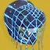
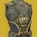
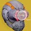
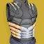
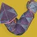
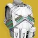
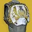
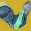
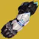
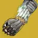

猎人
| 护甲 | 图标 | 异域 PERK | 说明 |
|---|---|---|---|
| 刺客风帽 |  | 遁形处决 | 用充能近战击杀或终结技击杀时： 获得虚空隐身，回复 67 点生命值。 由终结技触发时，隐身持续时间额外 +3 秒。 隐身持续时间（括号内为终结技触发）： = 7 秒（10） ｜ = 10 秒（13） 及以上 = 13 秒（16） |
| 阿斯瑞思之拥 | 飞掠尖刺 | 装备权衡飞刀时： 权衡飞刀获得第二次弹跳，追踪大幅增强。 2.5 秒内造成 3 次精准命中： 获得「强化飞刀」，持续 10 秒。 之后每次精准命中再延长 5 秒，最长 30 秒。 强化飞刀： 生效期间权衡飞刀伤害提高 300%[100%]，近战属性 +50。 命中可眩晕势不可挡勇士。 命中后该增益即消耗。 | |
| 力量平衡 | 奋发 | 强化线织幽灵： 幽灵获得 50%[25%]伤害抗性，持续时间延长 67%，并附带 2 只栖息线虫。 幽灵受到 40 点伤害时释放栖息线虫。 幽灵被摧毁时释放全部栖息线虫。 伤害抗性对自己造成的伤害无效。 处在自己的线织幽灵 15 米内时脱离雷达，由「隐匿」增益标示。 使用职业技能后 19 秒内，职业技能回复速度 ×0.5。 | |
| 凋零游侠 | 光伏镜面 | 处于电弧法杖超能期间： 格挡不额外消耗超能能量。 反射的射弹伤害提高 400%（对战斗人员为基础伤害的 10 倍）。 反射射弹提供 ?% 超能能量。 可随时主动结束电弧法杖，保留一部分未用完的超能能量。 返还比例随剩余能量变化：超能能量 100% 时返还未用能量的 75%，0% 时返还 50%。 电弧法杖结束时： 触发一次电弧爆炸，伤害随已反射的射弹数量提高，并致盲 10 米内的战斗人员。 基础 675[?] 伤害，反射大量射弹后最高 2700[?] 伤害。 获得 4 层电弧武器激涌，持续 21[16] 秒。 致盲爆炸伤害无距离衰减。 | |
| 投弹手 | 离别赠礼 | 使用职业技能时： 掉落一枚离别赠礼，1.5 秒后爆炸，在 7.5 米内造成 440[120] 伤害；接触地面或战斗人员立即引爆。 离别赠礼按所装备的超能附带额外效果： 电弧：致盲 10[3] 秒。 烈日：40+20 层灼烧。 虚空：压制 10 秒[对超能中的守护者无效]。 冰影：40[20] 层减速，持续 4+4[1.5+0.5] 秒。 缚丝：割裂 ? 秒。 | |
| 卡利班之手 | 烤焦他们 | 感应爆炸飞刀引爆时施加 60+0 层灼烧。 感应爆炸飞刀击杀触发点燃。 感应爆炸飞刀尚未引爆期间，基础近战充能速率额外 625%?。 灼烧每跳提供 7%[?%] 近战技能能量。 注意感应爆炸飞刀的整块能量倍率为 0.7×。 点燃击杀提供一次近战技能充能。 对烈日飞刀与枯萎之刃近战充能可溢出至 +1 次。 处于棱镜时，飞刀戏法与枯萎之刃可溢出至 +2 次。 | |
| 星界夜鹰 | 鹰眼骇客 | 将黄金枪替换为单发高伤版本。 黄金枪超能不再享有持续型超能的技能回复。 改造后的黄金枪： 造成 12984[?] 伤害，精准倍率 2×，命中即触发点燃。 该点燃伤害覆盖其他来源，恒定提高 10%。 （相比基础神射手黄金枪打出 3 次精准命中加点燃，精准命中伤害高 85%。） 用黄金枪击杀时： 返还 33%超能能量。 战斗人员爆炸，对 ? 米内的战斗人员造成最高 400[?] 伤害。 造成精准击杀时： 额外提供 1.5%–4.5% 的黄金枪超能能量，具体数值随战斗人员档位变化。 | |
| 曲腹蛛的伪装 | 特技专注 | 使用抓钩时： 获得织造铠甲，持续 10 秒。 回复 7 点生命值。 织造铠甲生效期间： ?% 受击抖动抗性。 击杀回复 17 点生命值。 | |
| 巨龙之影 |  | 幻金链甲 | 被动提供 +10 稳定性与 0.?× 举枪时长倍率。 使用职业技能时： 获得幻金链甲，持续 15 秒。 填装全部武器，并拾取 15 米内的弹药块，触发填装类武器 Perk。 幻金链甲： +35 稳定性、+? 操控性。 冲刺速度由 8.5 米/秒 提高到 9 米/秒。 滑铲距离由 6.5 米 提高到 8.5 米。 机瞄移动速度惩罚降低 ?%。 与描述不同，实际不提供任何职业属性。 |
| 觅敌者 | 无情追踪者 | 用技能对、、勇士、或造成伤害时： 获得 4 层与技能同元素的武器激涌，并高亮该战斗人员 16[11] 秒。 该增益不可刷新。 击杀被高亮的战斗人员会掉落一枚与分支职业同元素的能量拾取物。 | |
| 命运眷顾 | 命运 | 生命值全满，且击杀或 4.5[15] 秒未受伤害时： 每秒获得 6.6[1.1] 点虚空覆盖护盾，直到再次受伤为止。 持续刷新覆盖护盾的时长。 任何覆盖护盾生效期间： +25 稳定性、+25? 操控性，精度锥范围缩小 5%。 武器对战斗人员伤害提高 15%。 热量武器改为提高 20%。 覆盖护盾生效期间击杀会预备「仓促脱身」。 「仓促脱身」在覆盖护盾耗尽时提供 +30? 敏捷，持续 5 秒。 | |
| 冰霜-EE5 | 快速冷却 | 冲刺期间： 手雷与近战回复速度 ×2｜基础手雷/近战回复速率额外 +100%。 基础职业技能回复速率额外 +100%[200%]。 每 3[6] 秒获得 1 层冰霜护甲。 PvP 中若无韵律之吟，冰霜护甲无法叠到 1 层以上。 冰霜护甲生效期间： 3 层[1 层]冰影武器激涌。 | |
| 双子座小丑 | 迷惑 | 使用职业技能时： 对 10 米内的战斗人员施加迷惑。 迷惑： 与战斗人员迷失方向 5 秒。 音效短暂失真，短暂施加迷失方向，雷达消失 5 秒。 | |
| 失重引力子 | 消逝暗影 | 虚空隐身效果持续时间延长 2 秒。 获得虚空隐身时： 获得消逝暗影，持续 7 秒，最多 3 层。 隐身期间消逝暗影的时长不递减。 1 层 = 基础手雷与近战额外 +166.6%，职业技能回复速率 +67%。 2 层 = 基础手雷与近战额外 +333.3%，职业技能回复速率 +134%。 3 层 = 基础手雷与近战额外 +500%，职业技能回复速率 +200%。 叠到 3 层，或已满 3 层时再获得虚空隐身： +15 点虚空覆盖护盾，持续 7+3? 秒。 | |
| 天赋信念 | 必然馈赠 | 使用飞升或裂空打击时： 向前释放 3 枚追踪电弧射弹。 电弧射弹造成最高 200[40] 伤害并施加震颤。 手持刀剑时，电弧射弹计入刀剑的命中触发 Perk。 对 15? 米内的战斗人员施加震颤时： 获得 1 层抗性，持续 10 秒，最多 4 层。 再对 15? 米内的战斗人员施加震颤会刷新时长。 伤害抗性： 施加 1 次震颤 = 25%[5%] 伤害抗性（抗性 2 层） 施加 2 次震颤 = 40%[7.5%] 伤害抗性（抗性 3 层） 施加 3 次震颤 = 50%[10%] 伤害抗性（抗性 4 层） | |
| 鬼神胸甲 | 游荡刺客 | 虚空隐身结束时，若身处战斗人员 15 米内： 在自己脚下触发一枚陷阱炸弹。 两次触发之间有 5 秒冷却。 与捕猎者的伏击不产生联动。 处于鬼灵利刃超能期间： 重击按鬼灵利刃的命中与击杀数返还超能能量。 按命中与击杀累计的超能能量延长量：?% | |
| 矛隼胸甲 | 显身体验 | 虚空隐身结束时： 获得不稳定弹药，持续 9[3] 秒。 处于虚空隐身期间使用终结技： 伤害提高 35%，持续 6 秒。 自己与 24 米内的盟友获得预备覆盖护盾。 预备覆盖护盾： 基础职业技能回复速率额外 +500%，直到使用职业技能为止。 使用职业技能时消耗，转为 40 点虚空覆盖护盾，持续 10 秒。 | |
| 凯布利之刺 | 毒液之触 | 装备虚空近战技能时，击杀处于虚弱的战斗人员： 在其死亡位置释放一团虚弱烟雾。 提供 30%虚空近战技能能量。 该烟雾在机制上就是一枚立即引爆的陷阱炸弹。 | |
| 傻瓜雷达 |  | 升级传感器组 | 被动提供 +20 空中效率，机瞄期间雷达保持可见。 蹲下期间： 获得增强雷达（12 个扇区，常规为 6 个）。 对战斗人员造成伤害，或打破护盾时： 标记战斗人员 3 秒。 标记可穿墙显示。 战斗人员生命值低于 30% 时： 每低 1 个百分点，武器与技能伤害提高 1%。 剩 10% 生命值时为 +20% 伤害。护盾不计入生命值。 |
| 骗徒的握手 | 交叉反击 | 装备电弧近战时： 受到近战伤害，或用充能近战命中，会为接下来 3 秒内的下一次近战命中提供交叉反击。 交叉反击使该次近战伤害提高 400%，命中回复 40 点生命值。 交叉反击的近战造成电弧伤害。 | |
| 幸运裤 | 非法改装枪套 | 手持手炮时： +20 空中效率，滑铲距离由 6.5 米 提高到 8.5 米。 举起手炮时： 获得非法改装枪套，持续 6 秒。 对战斗人员造成直击伤害提供层数，最多 10 层。 举起非手炮武器即移除非法改装枪套。 非法改装枪套： +100 举枪速度操控性、0.6× 举枪时长倍率、精度锥范围缩小 30%。 每层使对战斗人员的直击伤害提高 45%，10 层时 +450%。 无礼言论每层改为 +30%直击伤害。 狂飙的超量充能弹药、隼月的超因果射击，以及其他所有非直击伤害都不受加成。 对幸运裤加成过的射击减伤 33%。 非法改装枪套到时或收枪时，若层数已达 7 层以上： 施加「运气用尽」10 秒，期间无法再触发非法改装枪套。 | |
| 幸运覆盆子 | 概率矩阵 | 电光手雷可多连锁一次，最多命中 5 名战斗人员。 电光手雷对首个命中目标施加震颤。 施加震颤时： 提供 15% 电光手雷手雷技能能量。 触发震颤连锁伤害时： 提供 7.5% 电光手雷手雷技能能量。 | |
| 巴克里斯面具 | 凌光偏转 | 装备电弧或冰影超能技能时： 闪身替换为位移。 不替换特技闪身。冷却与整块能量倍率按射手闪身计算。 使用职业技能时： 快速位移最多 12 米，位移期间隐身且无敌。 获得 1 层凌光偏转，持续 11 秒，最多 3 层。 凌光偏转： 1 层 = 10%｜2 层 = 21%｜3 层 = 33%，提高电弧、冰影与狼王的武器伤害。 对受冰影减益影响的战斗人员，武器伤害额外提高 10%。 生效期间武器击杀提供 60%职业技能能量。 该增伤与其他增益叠乘。 | |
| 忠诚面具 | 零因子 | 枯萎之刃命中与弹跳时： 在第 1 次与第 3 次弹跳处生成一块小型冰影水晶。 提供固定 7.5%近战技能能量。 用枯萎之刃碎裂一块冰影水晶时： 在该冰影水晶附近呈 120° 释放 3 枚冰影射弹。 冰影射弹命中处生成一块小型冰影水晶。 | |
| 机工诡诈臂袖 | 弹簧荷载悬置 | 被动为手枪提供 +50 空中效率、+100 操控性与 +100 填装速度。 重伤时举起手枪： 获得增伤，并补满手枪弹药。 增伤： 手枪伤害提高 100%[10%]。 手枪击杀补满弹匣。 重伤期间该增伤没有计时。 护盾恢复后开始 5 秒计时。 手枪击杀把计时刷新到 3 秒。 | |
| 摩伊拉 | 捕网猎手 | 线织尖刺可弹向缠结，引爆后立即回手。 用线织尖刺引爆缠结并接住时，自动拾起一枚缠结。 这样拾取的缠结计入元素拾取物的相关联动。 没接住上述线织尖刺时，在自己周围触发一次缚丝爆炸。 该爆炸在 9 米内造成 727[?] 点缚丝近战伤害，无距离衰减。 未接住的爆炸吃近战增伤，也触发近战联动。 未接住的爆炸不计为缠结伤害。 接住未命中缠结的线织尖刺，额外返还 25%近战技能能量，不受近战属性影响。 | |
| 守蛾人裹手 | 飞翼日蚀 | 击杀累积飞翼日蚀的充能，最多 6 份。 = 1｜ = 2｜及以上与 = 3 充满时提供 2 次飞翼日蚀手雷充能。 投出最后一只蛾笼后有 6 秒冷却，冷却结束才能重新累积。 飞翼日蚀： 命中处释放 2 只飞蛾。飞蛾元素取 20 米内最近的 2 个目标而定。 20 米内没有目标时，默认为虚空飞蛾。 最近目标是战斗人员时释放电弧飞蛾，以约 10 米/秒 追击，接触即引爆。 电弧飞蛾造成最高 473[守护者 31｜构造体 201] 点电弧手雷伤害，并在 4 米半径内致盲。 最近目标是盟友时释放虚空飞蛾。 虚空飞蛾以约 25 米/秒 追向盟友，接触提供 22.5 点虚空覆盖护盾。 | |
| 守誓者 | 金刚扣钩 | 被动为弓箭提供 +40 空中效率与 +10 蓄力时间。 +10 蓄力时间等同于蓄力时间大师杰作。 弓箭可无限期保持满蓄力。 主要弹药弓箭达到满蓄力 0.35 秒后： 每 0.5 秒提高一档伤害，2 秒后对战斗人员的直击伤害最高提高 200%。 狩猎箭头、毒素、冰影水晶、蜻蜓/爆炸箭头等效果不受加成。 满蓄力保持 4 秒后该增伤消失。 | |
| 全知之眼 | 超越遮罩 | 额外提供一次烟雾弹近战技能充能。 虚空隐身提供 50%[10%] 伤害抗性（抗性 4 层）。 让盟友获得虚空隐身时： 每名进入隐身的盟友提供 50%近战技能能量，4 名时共 200%。 盟友开始回复生命值。 由全知之眼持有者使其隐身的盟友共享该伤害抗性。 超能期间不享有该伤害抗性。 | |
| 盘蛇苞片 | 剪刀指 | 为烈日近战技能额外提供一次近战充能。 所有近战充能同时回复。 若最近 ? 秒内用过近战技能，则不会同时回满全部近战充能。 （例：用赌徒闪身时两次充能一并回满。） 用飞刀击杀时： 飞刀伤害提高 67%｜133%｜200%，持续 5 秒。 使用赌徒闪身刷新该时长。 | |
| 奥菲斯钻机 | 诡异箭矢 | 狩猎陷阱按被束缚的战斗人员数量返还技能能量： 每名返还 X%超能能量，最多 50%。 10%手雷技能能量 10%近战技能能量 10%职业技能能量 莫比乌斯箭袋每次施放可多发射一轮，持续时间延长 4 秒。 | |
| 雷电通流 |  | 突触接合 | 电弧法杖命中提供 1 层突触接合，持续 5 秒，最多 3 层。 电弧法杖伤害施加震颤。 掌击爆发（轻-轻-重）吃到 1.5 倍的增伤。 突触接合 1 层 = 伤害 +27%（40%），超能被动流失减慢 20%。 突触接合 2 层 = 伤害 +61%（96%），超能被动流失减慢 40%。 突触接合 3 层 = 伤害 +105%（174%），超能被动流失减慢 60%。 |
| 雷兽的挽具 | 莫比乌斯导管 | 施放风起云涌时： ? 米内的战斗人员被闪电击中，受到 650[?] 伤害并被施加震颤。 自己与 ? 米内的盟友获得增幅。 落雷按命中与击杀受电弧减益影响的战斗人员返还超能能量。 命中：T1 = ?%｜T2 = ?%｜T3 = ?%｜T4 = 25?% 击杀：T1 = ?%｜T2 = ?%｜T3 = ?%｜T4 = ?% 最多返还 50%超能能量。 击杀受电弧减益影响的战斗人员时： 额外提供风起云涌的超能能量。 = 1%｜ = 2.5%｜及以上 = 4%｜ = 4% | |
| 光辉跳舞机 | 死亡之舞 | 被动为主要武器提供 +20 空中效率。 主要武器腰射期间： +30 敏捷、+5 射程、+30 稳定性， 精度锥范围 −30?%、精准判定角度 +2?°， 瞄准辅助与伤害衰减距离 +20%。 死者传说、遗言与汤米的火柴盒不吃衰减加成，精度数值另有调整。 精度锥的具体数值无法实测，但高到足以抹平任何精度锥扩张。 主要武器击杀提供职业技能能量： = 34%｜及以上 = 100%｜ = 20% 职业技能能量已满时，用主要武器每 6 秒内连续击杀把计数推满 100%： = 34%｜及以上 = 100%｜ = 100% 额外提供一次职业技能充能，最多额外 2 次。 | |
| 复兴之握 | 暮域深处 | 强化暮域手雷： 减速场半径 +25%。 生成一块中型冰影水晶。 处在暮域手雷的减速场内时： 战斗人员造成的伤害降低 50%[20%]。 自己与盟友立刻获得 1 层冰霜护甲。 之后每 0.5 秒再获得 1 层。 与冬日之触同时装备时： 冰影水晶由中型变为大型。 减速场半径再 +50%，合计 +75%。 | |
| 封印阿罕卡拉护手 | 噩梦激励 | 用充能近战或抓钩近战击杀，或使用终结技时： 获得噩梦激励，持续 7 秒。 噩梦激励｜伤害提高 35%[20%]，+? 操控性，+50 空中效率。 补满收起的武器。 不与强化增益叠加。 获得噩梦激励后举起另一把武器： 刷新噩梦激励的时长。 噩梦激励生效期间用武器击杀会重新触发噩梦激励，让下一次换枪也吃到上述加成。 | |
| 加拉诺碎片 | 锋利棱角 | 用烈日近战技能击杀提供 2.5%–5% 的利刃弹幕超能能量，具体随战斗人员档位变化。 利刃弹幕的命中与击杀最多返还 50%超能能量，返还量不受超能属性影响。 返还量取决于命中数、击杀数与战斗人员档位。 ≈ 20%｜ = 50% 利刃弹幕的直击伤害与爆炸伤害提高 25%。 每命中 5 把飞刀触发一次延迟的烈日爆炸，每次施放最多 2 次。 每次爆炸在 10 米内造成无衰减伤害，并释放 4 枚弹片。 第 1 次爆炸 = 5852（对 3804）伤害｜第 2 次 = 6437（对 4184）伤害。 弹片在 ? 米内造成最高 290（对 190）伤害，并施加 20+0? 层灼烧。 超能增伤只作用于飞刀直击伤害、爆炸与点燃伤害。 零投入下对的伤害约提高 140%。 击败他们把利刃弹幕对的伤害由约 21K 提高到约 26K（约 +25%）。 | |
| 忍野的誓言 | 全新招数 | 额外提供一次弹跳手雷充能。 每获得 1 层电光充能提供 ?%手雷技能能量。 弹跳手雷的子机追击战斗人员更加激进。 弹跳手雷命中提供 4.2%[1.4%]手雷技能能量与 1 层电光充能。 每一次直击伤害与爆炸伤害都各算一次命中。 叠到 10 层电光充能时： 为自己与 ? 米内的盟友回复 ? 点生命值。 提供约 40%手雷技能能量。 下一枚投出的弹跳手雷被强化，多弹跳一次。 强化后的弹跳手雷在第 1、2 次弹跳各多释放 5 枚追踪弹。 | |
| 第六郊狼 | 双重闪身 | 额外提供一次职业技能充能。 被动附带一份收割者的效果。 | |
| 快速装弹松身裤 | 紧身 | 使用职业技能时： 填装全部武器，并拾取 15 米内的弹药块，触发填装类武器 Perk。 为自己与 15 米内的盟友提供 1 层紧身，持续 15 秒。 紧身生效期间： 闪身再叠 1 层，最多 5 层，并刷新时长。 刷新时，范围内的盟友层数与穿戴者对齐。 +40｜+40｜+45｜+50｜+55 填装速度 —｜0.925×｜0.915×｜0.91×｜0.89× 填装时长倍率 +40?｜+40?｜+45?｜+50?｜+55? 操控性 紧身生效期间每 3 秒内连续造成直击伤害会推进计数，推满 100% 提供 20%职业技能能量： 微型冲锋枪、追踪步枪 = 7.14%｜｜自动步枪、机枪 = 8.33%｜｜脉冲步枪 = 9.1%｜｜手枪 = 12.5%｜｜手炮、斥候步枪 = 16.7% 刀剑 = 20%｜弓箭、偃月、榴弹发射器、霰弹枪、狙击步枪 = 34% | |
| 噬星者之鳞 | 光能盛宴 | 能量球额外提供 2%超能能量。 所选超能为三连发黄金枪时，额外量降到 0.5%。 超能充满期间拾取能量球提供 1 层光能盛宴。 施放超能时： 消耗全部光能盛宴层数，回复生命值并提高超能伤害，持续 14 秒。 超能伤害 +18.2%｜+36.4%｜+54.6%｜+59.7%｜+64.8%｜+70%。 回复 ?｜?｜?｜?｜?｜200 点生命值。 满 6 层光能盛宴时施放超能： 额外获得 100 点覆盖护盾，持续 16 秒。 | |
| 踢踏5 | 液压推进器 | 处于空中时，对战斗人员减伤 30%。 滑铲距离由 6.5 米 提高到 8.5 米。 大幅强化全部跳跃。 | |
| 特里同之罪 | 戟兵之触 | 用偃月近战击杀时： 向弹匣溢出 1 发弹药，弹匣容量最多提高 100%。 15 米内有 3 名战斗人员时： +50 填装速度，偃月近战伤害提高 200%。 条件不满足后再保留 5 秒。 用偃月射弹击杀时： 战斗人员爆炸，在 4? 米半径内造成最高 350[101] 点与武器同元素的伤害。 | |
| 虫骸头冠 | 燃烧之魂 | 使用职业技能时： 获得 2 层治愈。 每 3 秒内连续用烈日击杀把计数推满 100%： = 34%｜及以上与 = 50% 获得 1 层燃烧之魂，持续 10 秒，最多 3 层。 全部层数同时到时。重新触发燃烧之魂会刷新时长。 燃烧之魂： 烈日手雷、近战、职业与超能技能伤害提高 15%。在棱镜上对烈日技能同样生效。 职业技能的治疗效果被强化，并扩散到 15? 米内的盟友： 1 层 = 3 层治愈。 2 层 = 1 层治愈加 1 层恢复，持续 3+1.5 秒。 3 层 = 2 层治愈加 1 层恢复，持续 5+2.5 秒。 若恢复已在生效，则按对应时长延长。 | |
| 幼年阿罕卡拉之脊 | 神龙利齿 | 固有为全部手雷提供快速球，感应手雷以外的手雷同样生效。 强化感应手雷： 爆炸伤害 +14%。爆炸的长与宽提高到 14 米。 爆炸不再造成自伤，且无距离衰减。 感应手雷持续时间变为 30 秒，本体 70 点生命值。 手雷与近战技能命中提供 30%[7%]感应手雷手雷技能能量。 手雷/近战造成的第一跳灼烧同样触发上述手雷能量返还。 两次手雷能量返还之间有 0.3 秒冷却。 速射神枪的命中各提供 10%[?%]感应手雷手雷技能能量。 |
泰坦
| 护甲 | 图标 | 异域 PERK | 说明 |
|---|---|---|---|
| 中止之跃 | 傀儡操纵 | 强化勇士之鞭： 勇士之鞭施加的悬停延长 3 秒。 对的悬停再延长 2 秒。 屏障： 多生成 2 条鞭。 鞭追击战斗人员更加激进，飞行距离增加 16.7%（5 米）。 推进器： 生成一枚缠结，最长存在 ? 秒，会朝 ? 米内的战斗人员抛掷自身，接触即引爆。 施加悬停时： 获得织造铠甲，持续 10 秒。 | |
| ACD/0反馈栅 |  | 狂怒导体 | 近战命中提供 1 层护甲充能。 护甲充能生效期间： 对战斗人员的近战伤害获得减伤。 被近战攻击命中时触发一次电弧爆发，消耗全部护甲充能。 电弧爆发施加震颤，并在 ? 米半径内造成电弧伤害。 电弧爆发： 90｜130｜170｜200｜225｜245 点电弧伤害 对战斗人员近战减伤 23.3%｜46.7%｜70%｜73.3%｜76.7%｜80% |
| 亚克兴角战役钻机 |  | 自动填装链 | 被动为自动步枪与机枪提供 +30 空中效率。 手持的自动步枪与机枪每 1.5 秒补充 10% 弹匣。 用自动步枪或机枪击杀时： 获得 1 层自动填装链，持续时间随层数变化，最多 10 层。 到时只掉 1 层，不是全部清空。 自动填装链： 10 层时伤害最高 +15%，+? 稳定性，+50 弹药生成。 伤害 +1.5%｜3%｜4.5%｜6%｜7.5%｜9%｜10.5%｜12%｜13.5%｜15% 稳定性 +?｜—｜+?｜+?｜+?｜+?｜+?｜+?｜+?｜+? 弹药生成 +5｜+10｜+15｜+20｜+25｜+30｜+35｜+40｜+45｜+50 每层时长 7｜6.5｜6｜5.5｜5｜4.5｜4｜3.5｜3｜2.5 秒 |
| 难以逾越的颅骨堡垒 | 补血矩阵 | 用充能电弧近战击杀时： 提供 100%近战技能能量，并开始回复生命值。 近战命中提供电弧近战技能能量，每次近战最多触发一次。 充能近战命中：50%近战技能能量。 重击生效期间非偃月近战命中：15%。 基础/偃月近战命中：5%。 | |
| 安泰俄斯护盾 | 反射爆冲 | 冲刺至少 1.5 秒后滑铲，且职业技能能量已满时： 在正面张开 180° 护盾，反射伤害与射弹，持续 0.45 秒。 反射的射弹伤害提高 50%。 每反射 1 点伤害消耗 2%职业技能能量。 | |
| 乔木典狱官 | 屏障手雷 | 把屏障冷却改回 Edge of Fate 之前的数值，职业技能回复速度约 ×1.45。 巍峨屏障 101 秒 → 70 秒｜集结屏障 55 秒 → 38 秒 使用职业技能时： 手雷技能替换为屏障手雷。 职业技能回满时屏障手雷即丢失。 屏障手雷命中处生成一座屏障。 落点 5 米内的战斗人员迷失方向。 屏障生成后 2 秒内不造成碰撞伤害。 屏障类型取所选屏障，并继承堡垒、鞭一类星相。 非屏障类职业技能默认按巍峨屏障及其冷却处理。 拾取 3[?] 枚能量球后： 强化屏障手雷，呈 ◯ 形生成 3 座屏障，彼此相隔 120°。 集结屏障挨得较近，巍峨屏障铺得较开。 | |
| 医疗设备 | 再来一份 | 被动附带一份火力无限的效果，并额外提供一次手雷技能充能。 武器击杀提供 10%手雷技能能量。 使用手雷技能时： 补满弹匣／清空 100% 热量。 | |
| 苍白苏醒 | 如火如荼 | 强化融合手雷： 固有附带快速球。 手雷命中即引爆。 命中可眩晕势不可挡勇士。 用融合手雷击杀提供固定量手雷技能能量。 = 25%｜ = 50%｜与 = 100%｜ = 100% | |
| 爆炸波行者 | 爆炸波行者 | 对爆炸自伤减伤 75%。 击杀为爆炸波行者充能： = 10%｜及以上 = 25%｜ = 20% 阿莱索尼姆的遗存 = 10% 造成战栗打击或风暴怒吼伤害，或在充能 100% 时受到爆炸自伤： 把穿戴者向后弹开 25 米，并提供 5 层冰霜护甲。 释放一道扩散的冰影波形，在 15 米内施加冻结[? 层减速，持续 ? 秒]。 射出 8 枚追踪弹片，命中各在 8 米内造成 623[?] 点冰影伤害。 自伤触发时弹道呈抛物线，战栗打击/风暴怒吼触发时直线向前。 弹片的击杀不为爆炸波行者充能。 爆炸箭头、高爆载荷与延时载荷虽然不造成自伤，也能触发爆炸波行者。 | |
| 卡德马斯山脊长矛帽 | 长矛警戒 | 钻石长矛命中处生成一块冰影水晶。 命中以上的战斗人员时生成 3 块冰影水晶。 钻石长矛伤害随冰霜护甲层数提高。 1 层 = +144%｜2 层 = +253%｜3 层 = +333%｜4 层 = +389%｜5 层 = +428%｜6 层 = +455%｜7 层 = +475% 钻石长矛的砸击先给冰霜护甲再造成伤害，因此必定吃满增伤。 装备冰影超能技能时，以下任一条件生成一支钻石长矛： 处在集结屏障后方，3 秒内造成 3 次精准命中； 每 3 秒内连续用冰影武器命中把计数推满 100%（冰影身体命中 = 5%｜冰影精准命中 = 12%）； 或用冰影武器击杀 2 名战斗人员。 有 ?[8] 秒冷却，与钻石长矛星相共用。 铸造者框架刀剑重击释放弹射物后，拾取钻石长矛可以吃到增伤。 | |
| 西坦壁垒 | 突击屏障 | 把巍峨屏障改为突击屏障。 突击屏障允许自己与盟友从中射击。 对突击屏障伤害提高 60%（有效生命值 312.5）。 | |
| 阿尔法·鲁皮之脊 |  | 生命源泉 | 使用职业技能时： 以自己为中心，立刻为 12 米内视线可及的自己与盟友回复生命值与护盾。 回复量取所装备的职业技能而定。 屏障回复 160 点生命值与 110 点护盾；推进器回复 60 点生命值。 治疗盟友提供 ?%职业技能能量，每 1? 秒最多一次。 处在屏障后方时，每 3 秒内连续造成直击伤害会推进计数，推满 100% 触发一次额外治疗脉冲，在 12 米内回复 30 点生命值： 微型冲锋枪、追踪步枪 = 7.14%｜｜自动步枪、机枪 = 8.33%｜｜脉冲步枪 = 9.1%｜｜手枪 = 12.5%｜｜手炮、斥候步枪 = 16.7% 刀剑 = 20%｜弓箭、偃月、榴弹发射器、霰弹枪、狙击步枪 = 34% 触发后有 2 秒冷却，冷却期间的命中不计数。 触发治疗脉冲后有 5 秒冷却，冷却结束前其他脉冲不会再回复生命值。 这两个冷却确实不同步。 超能技能额外生成一枚能量球，提供 7.14%超能能量。 黎明护罩共生成 4 枚，每枚提供 3.57%，合计 14.3%超能能量。 |
| 陨星胸甲 | 荣耀冲锋 | 雷霆冲击伤害提高 55%。 雷霆冲击结束时： 50%[10%] 伤害抗性（抗性 4 层），持续 5 秒。 处于增幅期间用近战击杀时： 按战斗人员档位额外提供超能能量。 T1 = 2.5?%｜T2 = 2.5%｜T3 = ?%｜T4 = 3%｜ = ?% 对任何超能技能都生效。 | |
| 毁灭之牙肩甲 | 厄运号角 | 每 10 秒内连续用虚空击杀 2–3 名战斗人员，提供 1 层虚空武器激涌，持续 11[6] 秒，最多 4 层。 满 4 层后再击杀会刷新时长。 用充能虚空近战击杀时： 提供 20%[10%]超能能量，每次近战施放只触发一次。 提供 4 层虚空武器激涌，持续 11[6] 秒。 哨兵圣盾的圣盾投掷命中提供 10%超能能量，并延长超能时长。 哨兵圣盾轻攻击击杀提供 100% 圣盾投掷能量。 | |
| 沙丘行者 | 线性促动器 | 冲刺速度由 8 米/秒 提高到 8.5 米/秒。 滑铲距离由 6.5 米 提高到 8.5 米。 冲刺 1.5 秒后： 获得线性促动器，持续 7 秒。 线性促动器生效期间近战直接命中： 消耗线性促动器，施加电击 2 秒。 被电击的战斗人员向 12 米内未被电击的战斗人员释放一道静电充能。 静电充能造成 220[50] 伤害并施加电击。 电击向其他战斗人员传导时刷新，每次触发线性促动器最多传 6 次。 每施加一次电击提供 2 层电光充能。 被电击期间的 2 秒内免疫后续连锁伤害。 | |
| 永恒战士 | 坚定不移 | 每 10 秒内连续用电弧击杀 2–3 名战斗人员，提供 1 层电弧武器激涌，持续 11[6] 秒，最多 4 层。 满 4 层后再击杀会刷新时长。 施放浩劫之拳时： 获得 75 点覆盖护盾，免除精准伤害加成。 覆盖护盾存在期间，5 秒未受伤害后开始回充，7 秒回满。 浩劫之拳的击杀提供 ?%超能能量。 浩劫之拳结束时： 提供 4 层电弧武器激涌，持续 30[6] 秒。 | |
| 圣火护心甲 | 日焰熔炉 | 装备烈日超能技能且超能已充满时： 技能击杀提供 2 层治愈，并提供日焰熔炉层数，最多 10 层，持续 20 秒。 = 1 层｜ = 2 层 未充能的近战击杀同样提供治愈与层数，偃月近战不算。 日焰熔炉： 手雷与盾爆屏障的击杀触发点燃，手雷元素不限。 基础手雷与职业技能回复速率最高额外 +250%。 超能伤害 +6.5%｜13.6%｜22%｜32%｜43%｜57%｜73%｜93%｜118%｜150%。 基础手雷/职业技能回复速率额外 +?%｜?%｜?%｜?%｜?%｜?%｜?%｜?%｜?%｜250%。 施放超能时｜日焰熔炉层数冻结，既不增也不减。 超能结束时｜消耗全部层数，按层数返还超能能量。 1 层 = 8%｜2 层 = 20%｜3 层 = 26%｜4 层 = 33%｜5 层 = 45%。 | |
| 危险推力 | 危险临近 | 造成 1 次精准击杀、4 次武器击杀，或用精准命中把计数推满，提供 1 层移民号微型导弹，最多 6 层。 精准命中计数： 追踪步枪、Vex 揭秘者：10% 自动步枪与机枪：15% 脉冲步枪、手枪与血色浪漫：20% 手炮、斥候步枪与霰弹枪：40% 弓箭、线性融合步枪、火箭手枪与狙击步枪：67% 计数在填装火箭时不清零，因此有些武器会出现交替发数（例如手炮 3 → 2 → 3 发）。 放置屏障或使用推进器时： 消耗全部层数，每层发射一枚追踪的动能微型导弹，每枚在 ? 米内造成最高 540[28] 点动能伤害；每命中一次提供 1 层移民号微型导弹，持续 10 秒。 移民号微型导弹提高火箭与微型导弹类武器的伤害，6 层时 +35%。 1 层 = 10%｜2 层 = 17%｜3 层 = 24%｜4 层 = 30%｜5 层 = 33%｜6 层 = 35% | |
| 至纯光能护心甲 | 盈溢光能 | 使用手雷或职业技能，或造成充能近战伤害时： 为另外两项技能各提供 1 层强化技能，持续 5 秒，最多 2 层。 施放超能技能会清掉全部层数。 例：造成雷霆一击伤害 → 手雷与职业技能回复加快。 1 层 = 基础手雷与近战回复速率额外 +400%[100%]｜2 层 = +800%[200%]。 1 层 = 基础职业技能回复速率额外 +25%｜2 层 = +50%。 1 层 = 手雷伤害 +20%[10%]｜2 层 = +35%[20%]。 1 层 = 近战伤害 +25%｜2 层 = +50%。 界面上的层数显示与实际生效的技能回复并不一致。 接上例：近战给出的强化 1 层还没到时就使用职业技能，手雷强化会升到 2 层并刷新时长，近战获得 1 层强化持续 5 秒，而职业技能那一份不会刷新——尽管界面写着强化 2 层。 | |
| 圣人14号的头盔 | 无星暗夜 | 黎明护罩给出的光之武器现在可在护罩外保留 15 秒。 以下全部只在光之武器生效期间成立： 平均每造成 600 点伤害以及每次击杀提供 1 层圣人，最多 14 层。 伤害 = 1 层｜ = 1 层｜ = 2 层｜及以上 = 3 层｜ = 3 层 圣人的持续时间等于当前黎明护罩的剩余时间。 伤害门槛不受压光影响（任何难度下需要的命中数相同）。 攒 1 层圣人所需的最小伤害与命中数按门槛分档： >2445 打 2 发｜>767 打 3 发｜>135 打 4 发｜>109 打 5 发｜>108 打 6 发｜>89 打 7 发｜>77 打 8 发，以此类推，平均每层 600 点伤害。 用动能或虚空伤害／击杀满足上述同一条件时： 在目标周围 7 米半径内施加压制 6[?] 秒。 拾取黎明护罩核心会消耗全部圣人层数，每次施放超能最多延长两次，上限为该超能施放时的最大时长。 第一次延长（圣人层数 + 1）秒，14 层时最多 +20 秒。 第二次延长降为每层 1 秒，10 层时最多 +10 秒。 | |
| 白霜-Z | 冰川壁垒 | 装备冰影超能技能时： 职业技能改为生成冰影水晶。 集结屏障与巍峨屏障替换为冰川壁垒。 冰川壁垒由 4 块中型水晶加中间 1 块小型水晶组成。 冰川壁垒继承集结屏障的加成，水晶全碎后依然生效。 屏障冷却按巍峨屏障计算。 使用推进器时： 在身前呈 V 形生成 2 块冰影水晶。 不继承集结屏障加成，也不改写冷却。 | |
| 冰瀑衣钵 | 冰川守卫 | 装备冰影超能技能时： 每获得 1 层冰霜护甲回复 10 点生命值。 每 3 秒内连续用冰影击杀 2 名战斗人员提供 1 层冰霜护甲。 屏障类职业技能替换为冰川守卫。 屏障冷却改写为 70 秒。 施放冰川守卫时： 为自己提供满层冰霜护甲。 对 ? 米内的战斗人员施加 100[40] 层减速。 | |
| 凯布利角盔 | 烈日壁垒 | 烈日击杀提供 15%职业技能能量。 两次由烈日击杀提供职业技能能量之间有 1? 秒冷却。 装备烈日超能技能时放置屏障： 向最远 18.5 米释放 3 道追踪的烈日波形。 烈日波形： 每道造成 480[100] 伤害并施加 60+30[30+15] 层灼烧，伤害不可重叠。 烈日波形命中[击杀]处会在战斗人员脚下生成太阳黑子。 烈日波形既不吃咆哮烈焰的加成，也不触发它。 由凯布利的烈日波形触发的灼烧效果失去 PvE 的 3 倍加成。 也就是说点燃伤害降低 66.7%。 另外由于太阳黑子灼烧本身的怪异表现，不带骨灰余烬约需 5.3 秒才点燃，带骨灰余烬约 1 秒。 | |
| 猖獗雄狮 | 跳跃喷射 | 跃升期间可腰射与机瞄，并被动提供 +50 空中效率。 跃升时长提高到 4 秒。 跃升时长： 高跳跃升：2.6 → 4 秒（+54%） 专注跃升：2.2 → 4 秒（+82%） 弹射跃升：1 → 4 秒（+300%） 主要武器腰射期间： +5 射程、+30 稳定性， 精度锥范围 −30%、精准判定角度 +2?°， 瞄准辅助与伤害衰减距离 +20%。 死者传说、遗言与汤米的火柴盒不吃衰减加成，精度数值另有调整。 | |
| 罗蕾莱辉煌头盔 | 烈焰烧灼 | 装备烈日超能技能时： 职业技能已充能且进入重伤，或装备集结屏障、巍峨屏障时使用职业技能： 在自己脚下生成一个太阳黑子。 由重伤触发时消耗一次职业技能充能。 生成的太阳黑子即使不装备星相也提供无敌索尔。 但不装备星相时太阳黑子时长无法延长。 | |
| 沉默者面具 | 恐惧面容 | 受到战斗人员伤害时： 提供 5% 手雷、近战与职业技能能量。 两次触发之间有 1 秒冷却。 装备虚空超能技能时： 每 5 秒内连续击杀 3 名战斗人员，或在重伤时击杀： 获得吞食，持续 5+2.5 秒。 | |
| 玄铠 | 锻造大师 | 拾取一枚焰灵，或每 3 秒内连续用烈日击杀 3 名战斗人员： 获得锻造大师，持续 12 秒。计时从使用投掷飞锤那一刻才开始走。 首次激活锻造大师提供固定 11.7%近战技能能量，持续 8 秒。 锻造大师生效期间： 按近战键可召回投掷飞锤，全额返还。 投掷飞锤的追踪性提升。 投掷飞锤命中后 2? 秒再召回即为完美回收。 完美回收触发一次爆炸，在约 5 米内造成最高 290[?] 伤害。 每次完美回收与每枚额外拾取的焰灵把时长延长 3 秒，最长 12 秒。 | |
| Mk.44让开 | 务必当心 | 无畏护甲的护盾生效期间： 每 1.5 秒提供 1 层电光充能。 速度加成生效期间： 在身后留下一片区域，为盟友提供速度加成。 | |
| 没有B计划 | 力量增幅 | 被动为霰弹枪提供 +? 填装速度与 +30 空中效率。 用霰弹枪或近战连续击杀把计数推满 100%： = 34%｜及以上与 = 50% 开始回复生命值。 增幅、恢复、虚空覆盖护盾、冰霜护甲或织造铠甲生效期间： 霰弹枪伤害提高 35%[10%]。 近战伤害提高 30%[?%]。 霰弹枪与近战击杀把上述效果的时长延长 5 秒，不超过各自原有上限。 虚空覆盖护盾生效时额外 +15 点。 超能近战伤害同样提高 30%，与护盾粉碎的 +50% 加算。 计入的招式：浩劫之拳轻攻击｜烈焰战锤弹片｜哨兵圣盾轻攻击｜冰川震击轻攻击与冰川震击期间的风暴怒吼。 | |
| 独眼面具 | 复仇 | 受到伤害时： 高亮第一个造成伤害的战斗人员 8 秒。 同时只能高亮一名战斗人员。 击杀被高亮的战斗人员提供复仇——95 点覆盖护盾，持续 6 秒。 复仇生效期间无法再高亮战斗人员。 | |
| 燃烧舞步之道 | 火焰行者 | 咆哮烈焰的层数提高烈日武器与点燃伤害。 咆哮烈焰 1 层｜武器伤害 +6%，点燃伤害 +15%。 咆哮烈焰 2 层｜武器伤害 +9.2%，点燃伤害 +20%。 咆哮烈焰 3 层｜武器伤害 +12.4%，点燃伤害 +24.9%。 受到的减速层数减半（向上取整），持续时间也减半。 冻结与悬停的持续时间减半。 冰影脱困不造成自伤。 从冻结或悬停中脱困会触发一次烈日爆炸，在 9 米半径内造成最高 105 点烈日伤害。 | |
| 和平守护者 | 机甲枪套 | 被动为微型冲锋枪提供 +40 空中效率。 收起的微型冲锋枪 1.25 秒后自动补满。 手持微型冲锋枪时： +25 敏捷 +50 操控性，举枪/收枪时长倍率 0.8?× 机瞄移动速度惩罚降低 33% 冲刺速度由 8 米/秒 提高到 8.5 米/秒。 滑铲距离由 6.5 米 提高到 8.5 米。 用微型冲锋枪命中战斗人员时： 获得 1 层增伤，持续 1 秒，最多 20 层。 每层使对战斗人员的微型冲锋枪直击伤害提高 5%。 后续命中刷新增伤时长。 对和平守护者加成过的射击减伤 33%。 | |
| 游隼胫甲 | 游隼打击 | 被动提供 +20 空中效率。 冲刺 2 秒后，且离地 0.5 秒后： 获得游隼打击，直到落地为止。 游隼打击： 冲锋类近战技能的直击伤害提高 250%。 对勇士、折磨者与改为提高 550%，且命中提供固定 100%近战技能能量。 冲锋类近战包括地震打击、战锤打击与圣盾强袭。 被冻结的战斗人员不吃游隼打击的近战增伤。 | |
| 凤巢 | 赋能信标 | 太阳黑子可作用于盟友，并可靠持续的烈日武器伤害延长。 不装备星相时似乎工作不正常，最多只能延长 2 秒。 凤巢生成的太阳黑子外圈带一道白环。 装备无敌索尔星相时： 太阳黑子给出的无敌索尔持续时间翻倍（5 → 10 秒）。 为盟友提供 3–5 次烈日增益时： 在自己脚下生成一个太阳黑子。 同时生效的烈日增益（例如一枚治愈手雷丢给 2 名盟友）按多次计数。 | |
| 点接触炮架 | 众神之锤 | 雷霆一击与落雷的击杀最多返还 50%近战技能能量。 使用雷霆一击时：按帧率额外返还近战技能能量。 帧率对应：30 帧 = 10%｜60 帧 = 18%｜120 帧 = 32%｜144 帧 = 41%｜300 帧 ≈ 77% 雷霆一击起手与放电时： 以落雷击中 15 米内的战斗人员，造成 181[50] 点电弧伤害并施加震颤。 同时立刻触发一次震颤连锁伤害。 处于增幅时落雷伤害提高 100%（360[100?]）。 把雷霆一击充满可让落雷伤害再提高至多 200%。 与增幅的加成叠乘，合计 1080[?] 点落雷伤害。 一次充满的雷霆一击造成 2365 伤害。 处于增幅时，单次最高 3085 伤害。 | |
| 英勇礼服 | 英勇跃升 | 喷气背包燃料：被动每秒充能 3.5%。 武器击杀提供 20% 燃料。 电弧充能近战击杀提供 50% 燃料。 燃料充满后，在空中按［空中移动］启动喷气背包。 每次使用后燃料一律清空。 启动喷气背包时｜在 6 米内造成最高 168[69] 点电弧伤害，并施加疲惫。 喷气背包时长取决于［空中移动］是轻按还是长按。 轻按：1.5 秒内飞行 30 米。 长按：3 秒内飞行 50 米。 疲惫使战斗人员的输出降低 25%。 飞行中撞上战斗人员会触发英勇肩撞，造成 1509[?] 点电弧伤害，在 ? 米内致盲，并提供 +40 近战属性，持续 7 秒。 英勇肩撞吃近战增伤。 | |
| 珍贵伤痕 | 金缮 | 复活盟友或被复活时： 张开一片 15 米的场域，持续 10 秒，为自己与盟友提供护盾加持。 盟友离开范围会暂时失去护盾加持。 护盾加持： 100 点覆盖护盾。 护盾加持存在期间，2 秒未受伤害后开始回充，1 秒回满。 覆盖护盾被打破后护盾加持移除，且无法再获得。 穿戴者的覆盖护盾被打破时，盟友身上的护盾加持一并移除。 用与超能同元素的武器击杀时： 为自己与 15 米内的盟友提供 1 层恢复，持续 3+1.5 秒。 两次触发之间有 3 秒冷却，界面上以「治疗」增益显示。 | |
| 火风暴臂铠 | 冲击烈焰 | 把燃烧锻锤改为一次性的砸击：伤害提高 650%，释放 3 道追踪波形，但不再按持续型超能计算超能技能生成。 波形施加 20+40 层灼烧，命中处生成一道旋风。 燃烧锻锤的旋风每 0.2 秒造成 19[16] 伤害，每 0.56 秒施加 ?+? 层灼烧，持续 7.5 秒，并追踪战斗人员。 多道旋风的伤害现在可以重叠。 神圣献祭第二段砸击的中间那道波形会生成一道旋风，每 0.2 秒造成 7[3] 伤害，每 0.56 秒施加 3+2 层灼烧。 | |
| 第二次机会 | 密耳弥冬之触 | 额外提供一次圣盾投掷近战技能充能。 哨兵圣盾的圣盾投掷施加虚弱 10 秒。 强化后的圣盾投掷： 变为可穿盾，命中施加虚弱 10 秒。 眩晕屏障勇士提供一次近战技能充能。 圣盾投掷的击杀生成一枚虚空裂口，不受冷却限制。 拾取虚空裂口时： 提供 11.25% 圣盾投掷近战技能能量。 | |
| 断绝末路 | 球面序列引信 | 用充能近战击杀或使用终结技时： 战斗人员触发一次动能爆炸，在大范围内造成随距离衰减的伤害，把战斗人员向上击飞并使其迷失方向。 衰减最多降低 20% 伤害。 爆炸伤害与半径随战斗人员档位变化（括号内为终结技触发）。 两次非连锁爆炸之间有 1 秒冷却。 爆炸伤害｜半径： ：439（598）点动能伤害，15 米。 ：598（717）点动能伤害，20 米。 及以上：717 点动能伤害，20 米。 由充能近战击杀触发的爆炸可以连锁，连锁出的爆炸较弱，在 8 米半径内最高只造成 242[?] 伤害。 连锁爆炸没有冷却，但不能同时触发多次。 | |
| 据点 | 双拳紧握 | 被动提供 +100 防御抗性与 +100 防御持久。 格挡期间： 50%[10%] 伤害抗性。 格挡下一次命中提供 2 层完美格挡，最多 100 层。 身上有任何恢复效果时无法累积层数。 10 秒未格挡任何命中会清掉全部完美格挡层数。 持有完美格挡层数时造成刀剑伤害： 提供 2 层恢复，时长随层数变化。 1 层时 2 层恢复持续 4[3] 秒，100 层时最长 16+8[6+3] 秒。 据点式格挡： 刀剑格挡改为提供 ?%[68%] 伤害抗性。 使用威能弹药刀剑时，格挡伤害与持续举盾都不再消耗刀剑能量。 | |
| 合成感受器 |  | 生物强化 | 15 米内有 3 名战斗人员时： 获得生物强化。 条件不满足后再保留 5 秒。 生物强化： 超能伤害提高 50%。 近战伤害提高 165%[100%]。 +35? 操控性，+35 填装速度。 |
| 大熊狂怒 | 熊卫 | 用坚不可摧或哨兵圣盾格挡期间： 移动速度提高 15%。 超能结束后把格挡掉的伤害转成超能能量，最多 50%。 坚不可摧结束时最多提供 60%手雷技能能量。 从 15% 起算，把坚不可摧的格挡量吃满后为 60%。 | |
| 无知希冀 | 神龙利爪 | 额外提供一次狂暴利刃近战技能充能。 狂暴利刃或镖弹风暴命中时： 获得 1 层神龙利爪，持续 2.75 秒，最多 3 层。 每次施放技能只提供 1 层。 神龙利爪： 镖弹风暴与狂暴利刃伤害提高 25%｜60%｜120%。 战争旗帜的脉冲按 10 米内每名盟友提供 5% 狂暴利刃近战技能能量，穿戴者本人也算一名。 | |
| 虫神爱抚 | 燃烧之拳 | 用近战、偃月近战或终结技击杀时： 获得 1 层燃烧之拳，最多 5 层，每层提高近战与武器伤害。 到时只掉 1 层，不是全部清空。 获得一层后 2 秒，该层的计时才开始走。 燃烧之拳： 1 层 = 近战伤害 +80%，持续 9.5 秒。 2 层 = 近战伤害 +160%，武器伤害 +20%，持续 10 秒。 3 层 = 近战伤害 +240%，武器伤害 +25%[20%]，持续 4 秒。 4 层 = 近战伤害 +320%，武器伤害 +30%[25%]，持续 4 秒。 5 层 = 近战伤害 +400%，武器伤害 +35%[25%]，持续 3 秒。 |
术士
| 护甲 | 图标 | 异域 PERK | 说明 |
|---|---|---|---|
| 神化面纱 | 无尽渴求 | 施放超能时，为自己与 ? 米内的盟友： 完全回满生命值、手雷、近战与职业技能能量。 超能结束时： 8 秒内每秒提供固定 66% 的手雷与近战技能能量。 | |
| 星云之歌 | 动中求存 | 被动提供 +30 空中效率，并强化瞬移。 在虚空或棱镜分支职业上装备瞬移时： 每 6[8] 秒提供一次免费的水平暗影瞬移，用［空中移动］触发。 暗影瞬移释放 4[2] 枚追踪弹，机制与新星折跃的相同，随超能伤害缩放。 瞬移距离增加 25%。 瞬移充能冷却降低 20%（两次充能均由 3.55 秒降到 2.85 秒）。 两次瞬移之间的间隔降低 30%（1.65 秒 → 1.15 秒）。 使用瞬移或暗影瞬移时： 对 10 米内的战斗人员施加不稳定。 获得不稳定弹药，持续 9[5] 秒。 +100 操控性，持续 2 秒；收枪即取消该效果。 雷达保持可见。 处于新星折跃超能期间： 暗影瞬移不消耗超能能量。 | |
| 巴利道斯织怒工 | 冰雪之心 | 被严冬之怒冻结的战斗人员受到的碎裂伤害提高 150%。 使用严冬之怒的碎裂攻击时： 30? 米内的盟友获得 4 层冰影武器激涌（持续 15[6] 秒）与满层冰霜护甲。 每名受益的盟友返还 ?%超能能量。 该增益可刷新，返还似乎每名盟友只算一次。 装备冰霜脉冲星相时施放裂痕： 自己与 ? 米内的盟友获得 2 层冰影武器激涌（持续 11[6] 秒）与满层冰霜护甲。 每名通过冰霜脉冲获得冰霜护甲的盟友提供 2%超能能量。 严冬之怒结束时： 为自己提供满层冰霜护甲。 | |
| 汇编器战靴 | 秩序祝福 | 被动为流明提供 +30 空中效率。高贵追踪弹会为流明补充高尚弹药。 站在裂痕或光焰之井里时： 按小队人数生成高贵追踪弹，平均每人每 8 秒一枚。 高贵追踪弹： 追踪 40 米内的盟友，靠近即施加增益。 优先找最近 8 秒内没被治疗过的盟友，同一名盟友每 4 秒最多命中一次。 治愈裂痕｜追踪弹回复 70 点生命值、60 点护盾，并开始回复生命值。 强能裂痕｜追踪弹提供 35%[15%] 增伤与 +100 职业属性，持续 5 秒。 用追踪弹为盟友上增益时按小队人数提供职业技能能量。 2 人 = ?%｜3 人 = 25?%｜4 人 = ?%｜5 人 = ?% | |
| 蔷薇束缚 | 虚空附体 | 虚空之魂持续时间延长 55%，10 秒后伤害最高提高 30%，并可通过交互收回。 收回后获得「虚空之魂待用」25 秒，期间可重新放置。 虚空之魂击杀时： 提高虚空之魂伤害并提供伤害抗性。 重新放置可保留已累积的加成。 虚空之魂加成： 伤害 +25%｜+50%｜+75%｜+100%。 伤害抗性 12.5%｜25%｜37.5%｜50%。 | |
| 纪念碑面具 | 高优先级 | 追踪步枪每 0.7 秒补充 4% 弹匣，收枪状态下同样生效。 ? 秒内用追踪步枪对、勇士、或载具命中 5 次： 该战斗人员被标记 10 秒。 后续命中刷新标记时长。 被标记的战斗人员被盟友击杀时： 为盟友生成威能弹药。 为穿戴者生成特殊弹药。 纪念碑面具的弹药块提供总备弹的 10%，并受回收器模组影响。 | |
| 炫火 | 晶体三极管 | 用动能武器击杀时： 战斗人员爆炸，元素与所装备的超能一致，并施加对应元素的减益。 获得 1 层晶体三极管，持续 11 秒，最多 2 层。 到时只掉 1 层，不是全部清空。 元素爆炸： 造成最高 252[100] 点元素伤害，并按所装备的超能施加对应减益。 半径随晶体三极管层数变化。 基础 = 4 米｜1 层 = 6 米｜2 层或动能精准击杀 = 8 米。 电弧：致盲 ?[1] 秒。 烈日：15+5 层灼烧。 虚空：虚弱 4 秒。 冰影：30 层减速，持续 7+1 秒。 缚丝：割裂 6+2 秒。 | |
| 阿罕卡拉之爪 | 冥冥低语 | 额外提供一次近战技能充能。 被动附带一份回天掌法的效果。 | |
| 反转之握 | 混沌交易 | 超量充能的手雷施加虚弱 6?[2.5?] 秒。 用混沌加速为虚空手雷超量充能期间： 获得 20% 伤害抗性。 造成超量充能虚空手雷伤害时： 触发混沌交换，持续 1.75 秒。 混沌交换提高基础手雷回复速率。 量子光束：额外 +5000%[4000%]。 散射手雷：额外 +3700%[2700%]。 涡流手雷：额外 +3400%[2400%]。 手持超新星：额外 +2500%?[2000%]。 两次触发之间有 4 秒冷却，使用手雷即清除该冷却。 | |
| 风暴头冠 | 传导叉齿 | 至少装备 1 项电弧技能时： 用电弧技能击杀，或造成震颤击杀： 获得 1 层传导叉齿，持续 10[4] 秒，最多 3 层。 全部层数同时消失。两次叠层之间冷却极短。 传导叉齿： 基础手雷、近战与超能回复速率额外 +168%｜335%｜503%。 雷霆万钧的被动超能流失降低 22%｜44%｜65%。 放置离子哨兵会在其位置触发一枚风暴手雷。 | |
| 黎明副歌 | 灰烬仪式 | 黎明的射弹命中即触发点燃。 灼烧每跳提供 5?%近战技能能量。 点燃伤害提高 100%。 每有一名战斗人员被点燃命中就提供 40%近战技能能量。 烈日爆发（猎人日志）把提供的近战能量翻倍，其自身伤害也翻倍。 | |
| 恐惧弥漫 | 恶意抓握 | 装备缚丝超能技能时： 施放裂痕会对 6 米内的战斗人员施加悬停。 自己施加的悬停被强化。 击杀处于悬停的战斗人员回复 15 点生命值。 恶意抓握： 处于悬停的战斗人员每 0.467[0.3] 秒受到一次递增的动能伤害。 每次强化悬停的持续伤害生效都回复 5 点生命值。 伤害从 23[9] 起算，平均每跳递增约 5.5%[?%]——悬停越久，伤害越高。 悬停到时的那一刻再造成 64[34?] 伤害。 对一名合计约 380 点动能伤害，带持续丝线可到约 550。 由施放裂痕触发的恶意抓握伤害提高 112.5%，上面的数值未计入这一项。 | |
| 仁心 | 领事投掷 | 地狱火的射弹飞行 17 米后伤害提高 20%。 地狱火的射弹在空中飞行 1 秒后释放 4 枚弹片。 弹片造成 18[?] 点烈日伤害，并施加 5+0 层灼烧。 弹片带追踪。 | |
| 异界之眸 | 上行脑路 | 被动提供基础手雷、近战与职业技能回复速率额外 +45%，以及 +15 空中效率。 把生命值低于 50% 的战斗人员描上红色轮廓。 把超能已充满的敌方描上黄色轮廓。 隐形的战斗人员只要生命值低于 50% 或超能已充满，同样会被描边。 | |
| 堕落者日星 | 离子导体 | 离子轨迹移动速度提高 66%，并提供更多技能能量。 每道离子轨迹提供的技能能量合计： 手雷 25%｜近战 25%｜职业技能 30% 拾取离子轨迹时： 15 米内的盟友获得 10% 的手雷、近战与职业技能能量。 | |
| 邪冬的头盔 | 领主之末 | 充能近战伤害施加常规虚弱 6 秒。 对抓钩近战与烈焰之歌不生效。 用充能近战击杀或使用终结技时： 以战斗人员死亡位置为中心触发一次强力虚弱爆发，使其迷失方向并提高受到的伤害 30%，时长随档位变化。 爆发的时长与范围取决于战斗人员档位（括号内为终结技触发）。 屏幕会黑掉 7.5 秒，随减益走向 15 秒时长而逐渐恢复清晰，界面不消失。 领主之末： ：15（20）米半径内施加减益 10（15）秒。 ：20（25）米半径内施加减益 15（20）秒。 及以上：25（25）米半径内施加减益 20（20）秒。 | |
| 地磁安定靴 | 水到渠成 | 持有至少 5 层电光充能时，冲刺 1.5 秒并保持冲刺： 每 0.33 秒获得 1 层电光充能。 拾取离子轨迹时： +4% 混沌之触超能能量。 混沌之触命中提供 10%超能能量。 两次触发之间有 0.75 秒冷却。 混沌之触的总伤害因此最高提高 120%。 | |
| 逃逸艺术家 |  | 动态二重奏 | 电弧之魂命中提供 5%手雷技能能量，每轮点射最多一次。 处于吞食期间命中不再提供手雷能量。 装备电弧手雷技能时： 长按［手雷］召出一只电弧之魂，持续 20 秒，并获得增幅。 电弧之魂存在期间，裂痕把它的时长刷新到 20 秒，而不是 15 秒。 |
| 卡恩斯坦臂章 | 吸血鬼的拥抱 | 用近战击杀时： 3 层治愈与 1 层恢复，持续 8+4 秒。 使用终结技时： 3 层治愈与 2 层恢复，持续 8+4 秒。 | |
| 月之阵营靴 | 炼金蚀刻 | 自己与盟友站在穿戴者施放的裂痕或光焰之井上时： +100 填装速度，填装时长倍率 0.9×。 强能裂痕与光焰之井提供 100%[50%] 的伤害衰减距离加成。 换下这件异域后效果仍会保留。 主要武器腰射期间： +5 射程、+30 稳定性， 精度锥范围 −30%、精准判定角度 +2?°， 瞄准辅助与伤害衰减距离 +20%。 死者传说、遗言与汤米的火柴盒不吃衰减加成，精度数值另有调整。 | |
| 虚荣自负 | 针术 | 神秘织针变为可穿盾。 用神秘织针命中战斗人员会打上一个菱形标记，持续 10 秒。 用神秘织针击杀，或击杀处于悬停的战斗人员时提供近战技能能量。 T1 = 15%｜T2 = 22.2%｜T3 = 33%｜T4 = 100%｜ = 33% 被标记的战斗人员死亡时： 目标触发一次悬停爆发。 造成 269[40] 点缚丝近战技能伤害，并对 6 米内的战斗人员施加悬停。 对被标记的战斗人员再命中 2 次神秘织针： 目标触发一次更强的悬停爆炸。 造成 538[?] 点缚丝近战技能伤害，并对 10 米内的战斗人员施加悬停。 对同一名战斗人员命中 5 次织针风暴： 目标触发一次范围更大、伤害更高的悬停爆炸。 造成 5040[?] 点缚丝超能技能伤害，并对 10 米内的战斗人员施加悬停。 | |
| 战斗和谐护肩 | 吸收电池 | 用与超能同元素的武器击杀，或每 3 秒内连续造成 5 次同元素武器伤害（每秒最多计一次）： 触发能量虹吸，额外提供超能能量，每 ? 秒最多一次。 超能已充满时，能量虹吸提供 4 层与超能同元素的武器激涌，持续 11[6] 秒。 超能已充满时，烈日超能上的能量虹吸有时会触发失败。 按击杀：T1 = 1.5%｜T2 = 2%｜T3 = ?%｜T4 = 2.5%｜ = 2.5?% 按伤害：?%超能能量 超能技能结束时： 4 层电弧、烈日、虚空、冰影与缚丝武器激涌，持续 10 秒。 获得和谐弹药，持续 15 秒。 和谐弹药： 造成与超能同元素的武器伤害时，在目标身上触发一次同元素爆炸。 引爆在 6 米内造成最高 180[?] 伤害，最低衰减到 50%。 每秒最多引爆一次。和谐弹药的击杀会触发能量虹吸。 | |
| 亡灵之握 |  | 吞噬者之握 | 被动为忧愁武器提供 +30 空中效率。 近战命中施加强效腐化。 被腐化的战斗人员死亡时在 5 米半径内扩散强效腐化。 强效腐化每 0.52[0.7] 秒跳一次伤害，10[?] 秒内最多 19[?] 跳，每跳造成 32[5?] 点动能伤害，整段合计 1366[?] 伤害。 强效腐化的每一跳伤害都比上一跳高：前 14 跳每跳递增 11%，最后 5 跳平均每跳递增 41%。 重新施加强效腐化会把递增重置。 |
| 奈扎雷克原罪 | 深海萃取 | 用虚空伤害击杀提供深海萃取，每次 2.5 秒，最长 20 秒。 灵魂虹吸的击杀，以及用虚空伤害击杀处于压制的战斗人员，把深海萃取延长 1.5 秒。 灵魂虹吸命中施加压制 10[5] 秒。 深海萃取生效期间： 基础手雷与近战回复速率额外 +300%。 基础职业技能与超能回复速率额外 +200%。 | |
| 虚无镣铐 | 散射充能 | 额外提供一次散射手雷技能充能。 散射手雷的子弹药追踪与速度大幅提升。 散射手雷的击杀生成 3 枚额外的散射子弹药。 额外的子弹药无法再引发爆炸。 | |
| 毒蛇面貌 | 眼镜蛇图腾 | 被动提供 +35 操控性、+35 填装速度与 +10 空中效率。 | |
| 锇素手套 | 热情急冻 | 额外提供一次急冻手雷技能充能。 强化急冻手雷： 追踪更强。 飞行距离与速度提高 17.5%。 造成伤害时提供手雷技能能量。 急冻手雷提供的手雷技能能量： T1 = 10%｜T2 = 22%｜T3 = 34%｜T4 = 50%｜ = 7% | |
| 凤凰法则 | 战心 | 超能为光焰之井、站在自己的光焰之井内、且超能能量低于 50% 时： 每次击杀提供 10%超能能量。 每连续一次击杀，提供量递减 1.5%，最低每次 4%。 10% → 8.5% → 7% → 5% → 4.5% → 4% → 4%…… | |
| 冥火之刺 | 光能余烬 | 装备烈日超能技能时： 武器击杀按战斗人员档位提供职业技能能量。 T1 = 18%｜T2 = 26%｜T3 = 40%｜T4 = 60%｜ = 80%｜ = 100% = 30% 站在裂痕里用武器击杀时： 治愈裂痕｜为自己与 10 米内的盟友提供焕光，持续 6.5 秒。 强能裂痕｜为自己与 10 米内的盟友提供 1 层治愈。 光焰之井与黎明的击杀为自己与 10 米内的盟友提供焕光与 2 层治愈。 | |
| 火焰润雨 | 冲天枪手 | 被动为融合步枪与线性融合步枪提供 +30 空中效率。 融合步枪与线性融合步枪的击杀提供焕光，持续 7.5+3.75 秒。 空中移动补满全部武器。 空中移动包括伊卡洛斯突进与编织微步。 | |
| 霜袍服装 | 凄凉领域 | 强化凄凉观察者： 索敌距离提高到 50 米。 在生成位置的斜对角生成 4 块中型冰影水晶。 凄凉观察者散出一片覆盖 6 米的冰影风暴。 那 4 块冰影水晶 15 秒后重新生成。 冰影水晶按超能技能伤害计算。 站在冰影风暴里时： 每秒获得 1 层冰锥，最多 5 层。 开火即触发冰锥攻击，释放一枚冰影射弹，造成 50[?] 点冰影伤害，并施加 50[20] 层减速，持续 ?+? 秒。 冰锥每 0.2 秒可发射一次。 离开冰影风暴后冰锥再保留 2 秒。 | |
| 血红炼金术 | 真血之法 | 处在裂痕或光焰之井里时： 4 层与超能同元素的武器激涌。 对战斗人员造成伤害会打上标记，持续 5 秒。 被标记的战斗人员受到自己的伤害提高 10%。 击杀提供真血之法，每次 5 秒，最长 15 秒。 真血之法生效期间，裂痕的计时暂停。 光焰之井不会被真血之法延长。 战斗中临时换上血红炼金术，其全部效果会失效 10 秒。 该 10% 对自己造成的所有伤害生效，不限于武器。 | |
| 割线纤维 | 吞食裂缝 | 装备虚空超能技能时，只对自己生效： 站在自己创造的强能裂痕上提供吞食，持续 11+0 秒。 离开同一个强能裂痕再进去会刷新吞食的时长。 割线纤维的吞食最多刷新到 11+11 秒。 吞食生效期间： 击杀提供 10%职业技能能量。 不再提供过载射击——破盾功能如今已是固有 Perk 自带的一部分。 | |
| 阿罕卡拉之颅 | 创世辉煌 | 新星炸弹期间大幅提高伤害抗性。 从 99.5% 起步，到接近结束时骤降到 75%。 施放新星炸弹时： 获得 5 秒内施放「新星炸弹：长矛」的能力。 新星长矛在 8 米内造成最高 2269[?] 伤害，对最高 2950 伤害。 用长矛打碎新星灾变会在灾变追踪弹之外再触发一道新星涡流。 新星涡流与超能版机制相同。 触发至少需要 20 米距离。 单次施放新星炸弹对最高约 14500 伤害。 新星炸弹的击杀返还 5?%超能能量，最多 50%。 处于吞食期间用武器击杀时： 按战斗人员档位额外提供超能能量。 T1 = ?%｜T2 = ?%｜T3 = ?%｜T4 = ?%｜ = ?% 实际数值随档位变化，对任何超能技能都生效。 | |
| 先知之视 | 失落之声 | 治愈手雷的恢复球替换为恢复炮台。 消耗治愈手雷会在身前生成一座恢复炮台。 恢复炮台： 存在 9 秒，构造体生命值 100?。 每 3 秒向自己与 30 米内的盟友放出治疗追踪弹。 治疗追踪弹在 7.5 米半径内提供 1 层治愈与 1 层恢复，持续 4+2[3+1.5] 秒。 装备火焰之触时，只对穿戴者本人：治愈与恢复提高到 2 层。 为受伤的盟友回复生命值 1 次[6 次]后： 在该盟友位置生成一枚能量球，提供 2.5%超能能量。 两枚能量球之间有 10 秒冷却。 | |
| 星火协议 | 融合掌控 | 额外提供一次融合手雷技能充能。 被动提供基础融合手雷回复速率额外 +20%。 处于焕光，或站在光焰之井、强能裂痕里时： 武器每命中提供 5% 融合手雷手雷技能能量，每 0.4 秒最多一次。 武器击杀提供 15% 融合手雷手雷技能能量。 用融合手雷击杀时： 提供 100%职业技能能量。 | |
| 雄鹿 | 逝者留痕 | 为站在穿戴者创造的裂痕里的提供 25%[5%] 伤害抗性（抗性 2 层）。 裂痕与光焰之井重叠或位于其中时，站在裂痕上仍能吃到该抗性。 进入重伤时： 逝者留痕提供 50%[25%]职业技能能量。 该增益一直持续到脱离重伤为止，实际起到冷却的作用。 死亡时： 生成一个治愈裂痕，持续 15 秒。 | |
| 风暴舞者之拥 | 晋升振幅 | 施放超能时： 获得增幅，持续 15 秒。 装备雷霆万钧超能技能时： 雷霆万钧的命中与击杀提供 1 层晋升振幅，最多 30 层。 雷霆万钧的离子瞬移超能消耗降低 50%，降到 3.125%。 晋升振幅： 每层提高雷霆万钧伤害 6.7?%，30 层时 +200%。 按击杀数最多返还 30% 的风暴舞者超能能量。 处于增幅期间： 电弧技能命中提供 1 层电光充能，每 0.6 秒最多一次。 | |
| 炎阳护腕 | 氦气螺线 | 名为「烈日手雷」的那种烈日手雷固有附带快速球，持续时间延长 2 秒。 充能近战击杀提供 5 秒的炎阳护腕待用。 炎阳护腕待用期间使用手雷技能： 获得炎阳护腕增益，持续 4 秒。 炎阳护腕使「烈日手雷」的基础回复速率额外 +20000%。 | |
| 浮游孢子 | 浮游孢子 | 打破缠结时： 生成 2 只线虫。 线虫命中施加瓦解。 | |
| 横断之步 | 神异量角器 | 冲刺 1.5 秒后： 把手中武器的弹匣补满 100%／把热量清空 100%。 冲刺速度由 8 米/秒 提高到 8.5 米/秒。 滑铲距离由 6.5 米 提高到 8.5 米。 蹲行速度不会低于 4 米/秒。 | |
| 真理之容 | 第四魔法 | 用与手雷同元素的武器击杀时： 获得 1 层死亡阵痛，最多 5 层，每层提高手雷技能伤害并每秒额外提供手雷技能能量。 到时只掉 1 层，不是全部清空。 获得一层后 2 秒，该层的计时才开始走。 死亡阵痛： 1 层｜手雷伤害 +40%[20%]，抓钩近战伤害 +?%，每秒额外 +0.5% 手雷能量，持续 8 秒。 2 层｜手雷伤害 +55%[40%]，抓钩近战伤害 +?%，每秒额外 +1% 手雷能量，持续 7 秒。 3 层｜手雷伤害 +70%[60%]，抓钩近战伤害 +?%，每秒额外 +1.5% 手雷能量，持续 6 秒。 4 层｜手雷伤害 +85%[80%]，抓钩近战伤害 +?%，每秒额外 +2% 手雷能量，持续 5 秒。 5 层｜手雷伤害 +100%，抓钩近战伤害 +170%，每秒额外 +2.5% 手雷能量，持续 4 秒。 死亡阵痛生效期间使用手雷技能，持续 5 秒： 20 米内的盟友获得「感受烈焰」。 「感受烈焰」使手雷回复速度 ×10。 | |
| 辐径晚星 | 行星洪流 | 15 米内至少有 3 名战斗人员时： 基础职业技能回复速率额外提高，随人数递增。 3 名 = +250%｜4 名 = +666%｜5 名 = +1085%｜6 名 = +1500% 放置裂痕 1 秒后： 触发一道电弧冲击波，在 7.5 米内造成 360[100] 点电弧伤害并打断动作。 之后每 5 秒再触发一道，直到裂痕消失。 被冲击波击杀的战斗人员会爆炸，造成 180[100?] 点电弧伤害。 装备电弧超能技能时，爆炸与冲击波附带致盲。 | |
| 神圣黎明之翼 | 晨星圣典 | 装备烈日超能技能时： 在空中机瞄即获得晨星圣典。 被动在空中提供 +50 空中效率。 晨星圣典： 把自己定在空中 2.8 秒。 战斗人员瞄准穿戴者的精度下降。 期间继续命中可延长 +? 秒，最长 ? 秒。 生效期间提供 15% 伤害抗性与 25% 受击抖动抗性。 烈日武器的击杀提供 1 层恢复（持续 ? 秒），并补满收起的武器。 | |
| 狡诈严冬 | 督军印记 | 近战击杀与偃月近战击杀提供 1 层督军印记，最多 10 层。 终结技提供 3 层督军印记。 督军印记逐层衰减。终结技在动作开始时刷新层数时长。 督军印记每层提高近战伤害，持续 4.75 秒。 1 层 = +67.5%｜2 层 = +122%｜3 层 = +166%｜4 层 = +202%｜5 层 = +228% 6 层 = +249%｜7 层 = +265%｜8 层 = +278%｜9 层 = +289%｜10 层 = +300% 叠到或刷新到 10 层督军印记时： 获得一次近战技能充能。 获得「督军狂怒待用」8 秒，且无法由终结技刷新。 不去触发督军狂怒时，增益会退回督军印记 10 层。 督军狂怒待用期间使用近战或偃月近战： 近战伤害 +400%，近战动作时长 ×0.8，近战回复速度 ×38.4👀，持续 10 秒。 督军狂怒生效期间无法累积督军印记；增益结束时把督军印记清成 0 层。 |
永劫教派
永劫系异域三职业通用，效果由所选教派决定。下文的「永劫盟友」指同样装备了永劫系异域的队友。
| 护甲 | 图标 | 异域 PERK | 说明 |
|---|---|---|---|
| 力量学派 | 破敌者之咏 | 3 秒内造成 4 次精准命中： +30 填装速度、填装时长倍率 0.85×、+40? 操控性，持续 10 秒。 3 秒内对、或勇士造成 4 次精准命中，或眩晕一名勇士： 标记该战斗人员 30 秒，不可刷新。 被标记的战斗人员对全队高亮，受到盟友的伤害提高 20%。 该增伤与任何加成叠加。 盟友可穿墙看到被标记的战斗人员上的 X 标志。 首次标记一名战斗人员时，? 米内未使用力量学派的永劫盟友在 3 秒内每秒获得固定 33.33% 的手雷与近战技能能量。 | |
| 洞察学派 | 负武者之咏 | 造成 2 次精准多杀： 生成一枚能量球，为盟友提供 3.57%超能能量。 用终结技处决一名时： 为 ? 米内的盟友生成一份特殊弹药块。 用终结技处决、勇士或时： 为 ? 米内的盟友生成一份威能弹药块。 永劫弹药块提供常规弹药块拾取量的 60%，且同样有完整的浮动区间。 用终结技处决、、勇士或时： 未使用洞察学派的永劫盟友获得 ?%超能能量。 | |
| 活力学派 | 赐光者之咏 | 盟友死亡时： 提供 25%职业技能能量，以及对战斗人员 40% 伤害抗性，持续 15 秒。 复活盟友时： 提供 100%职业技能能量，以及对战斗人员 40% 伤害抗性，持续 10 秒。 10 米内处于重伤的盟友获得对战斗人员 25% 伤害抗性。 10 米内处于重伤、且未使用活力学派的永劫盟友每秒额外获得 15%职业技能能量。 盟友脱离重伤后，上述增益再保留 1 秒。 |
职业金
异域职业物品的属性分布固定：左栏决定护甲原型，右栏给出第三属性。两栏属性重叠时，右栏按从高到低的优先级给出第三属性的顺序。
| 左栏 | 图标 | 说明 | 右栏 | 图标 | 说明 |
|---|---|---|---|---|---|
| 通用 | |||||
| 刺客之灵 | 用充能近战击杀时： 获得虚空隐身，持续 7 秒。 使用终结技时： 获得虚空隐身，持续 10 秒。 | 噬星者之灵 | 超能充满期间拾取能量球： 获得 1 层光能盛宴，最多 6 层。 换到另一件带噬星者之灵的异域职业物品时，当前层数保留。 施放超能时： 消耗全部光能盛宴层数，超能伤害提高，持续 14 秒。 超能伤害 +18.2%｜+36.4%｜+54.6%｜+59.7%｜+64.8%｜+70%。 部分超能技能收益降低： 烈焰之歌不吃灼烧效果的伤害提升。 新星炸弹、雷霆冲击与暮光军火最高 +50% 超能伤害。 织针风暴最高 +35% 超能伤害。 | ||
| 至纯光能之灵 | 使用手雷或职业技能，或造成充能近战伤害时： 为另外两项技能各提供 1 层强化技能，持续 5 秒，最多 2 层。 例：造成组合打击伤害 → 手雷与职业技能回复加快。 强化技能： 1 层 = 基础手雷与近战回复速率额外 +400%[100%]｜2 层 = +800%[200%]。 1 层 = 基础职业技能回复速率额外 +25%｜2 层 = +50%。 界面上的层数显示与实际生效的技能回复并不一致。 接上例：近战给出的强化 1 层还没到时就使用职业技能，手雷强化会升到 2 层并刷新时长，近战获得 1 层强化持续 5 秒，而职业技能那一份不会刷新——尽管界面写着强化 2 层。 | 合成感受器之灵 | 15 米内有 3 名战斗人员时： 获得生物强化，持续 5 秒。 生物强化： 近战伤害提高 165%[100%]。 偃月近战伤害提高 100%。 对使用闪电激涌时效果降低。 | ||
| 毒蛇之灵 | 被动提供 +35 操控性。 | 真理之灵 | 用与手雷同元素的武器击杀时： 获得 1 层死亡阵痛，最多 5 层，每层提高手雷技能伤害并每秒额外提供手雷技能能量。 到时只掉 1 层，不是全部清空。 获得一层后 2 秒，该层的计时才开始走。 死亡阵痛： 1 层｜手雷伤害 +40%[20%]，每秒额外 +0.5% 手雷能量，持续 8 秒。 2 层｜手雷伤害 +55%[40%]，每秒额外 +1% 手雷能量，持续 7 秒。 3 层｜手雷伤害 +70%[60%]，每秒额外 +1.5% 手雷能量，持续 6 秒。 4 层｜手雷伤害 +85%[80%]，每秒额外 +2% 手雷能量，持续 5 秒。 5 层｜手雷伤害 +100%，每秒额外 +2.5% 手雷能量，持续 4 秒。 | ||
| 猎人 | |||||
| 卡利班之灵 | 用充能近战击杀触发点燃。 该点燃不吃近战伤害加成。 | 郊狼之灵 | 额外提供一次职业技能充能。 | ||
| 加拉诺之灵 | 超能命中与击杀返还超能能量。 最多返还 50%超能能量。 丝线打击与黄金枪最多返还 30%。 五种超能技能尚未逐一实测。 | 曲腹蛛之灵 | 使用手雷技能时： 获得织造铠甲，持续 10 秒。 | ||
| 复兴之灵 | 处在自己暮域手雷的减速力场内时： 战斗人员造成的伤害降低 50%[20%]。 自己与盟友立即获得 1 层冰霜护甲。 之后每 0.5 秒再提供 1 层冰霜护甲。 | 矛隼之灵 | 脱离虚空隐身时： 获得不稳定弹药，持续 9[3] 秒。 | ||
| 巨龙之灵 | 被动提供 +10 稳定性与 0.?× 举枪时长倍率。 使用职业技能时： 获得幻金链甲，持续 9 秒。 填装全部武器，并拾取 15 米内的弹药块，触发填装类武器 Perk。 幻金链甲： +35 稳定性、+? 操控性。 | 骗徒之灵 | 受到近战伤害，或打出充能近战命中时： 3 秒内的下一次近战命中获得交叉反击。 交叉反击使基础近战与电弧近战伤害提高 400%。 交叉反击的近战攻击造成电弧伤害。 | ||
| 觅敌者之灵 | 对、、勇士、或造成技能伤害时： 获得 4 层与技能同元素的武器激涌，持续 16[11] 秒。 该增益不可刷新。 | 虫骸之灵 | 使用职业技能时： 获得 2 层治愈。 每 3 秒内连续击杀把计数推满 100%： = 34%｜及以上与 = 50% 获得 1 层燃烧之魂，持续 10 秒，最多 3 层。 全部层数同时到时。重新触发燃烧之魂会刷新时长。 燃烧之魂：职业技能的治疗效果被强化，并扩散到 15? 米内的盟友： 1 层 = 3 层治愈。 2 层 = 1 层治愈加 1 层恢复，持续 3 秒。 3 层 = 2 层治愈加 1 层恢复，持续 5 秒。 若恢复已在生效，则按对应时长延长。 | ||
| 泰坦 | |||||
| 白霜之灵 | 放置屏障时： 生成一道冰影墙，宽度相当于 5 块中型水晶，正中那块是小水晶。 屏障冷却改按巍峨屏障的?计算。 使用推进器时： 生成 2 块冰影水晶。 与异域护甲版本不同，不提供集结屏障的加成。 | 阿尔法·鲁皮之灵 | 放置屏障或使用推进器时： 立即为自己与 12 米内视野可见的盟友回复生命值与护盾。 屏障回复 160 点生命值与 110 点护盾，推进器回复 30 点生命值。 两次治疗脉冲之间有 5 秒冷却。 治疗盟友提供 ?%职业技能能量。 | ||
| 断舍之灵 | 用充能近战击杀或终结技击杀时： 战斗人员触发一次动能爆炸，在 ? 米内造成最高 400[?] 伤害。 非连锁爆炸之间有 1 秒冷却。 充能近战击杀触发的断绝爆炸可以连锁，连锁出的爆炸较弱，在 ? 米半径内最高造成 268[?] 伤害。 连锁爆炸没有冷却。 | 接触之灵 | 打出充能近战命中时： 被命中目标 15 米内的战斗人员遭到闪电击中。 闪电造成 181[50] 点电弧伤害并施加震颤。 | ||
| 中止之灵 | 强化勇士之鞭： 屏障： 多生成 2 条鞭。 鞭追击战斗人员更加激进，飞行距离增加 ?%。 推进器： 缠结最长存在 ? 秒，会朝 ? 米内的战斗人员抛掷自身，接触即引爆。 | 伤痕之灵 | 用与超能同元素的武器击杀时： 为自己与 15? 米内的盟友提供 1 层恢复，持续 3+1.5 秒。 两次触发之间有 3 秒冷却。 | ||
| 承负之灵 | 用坚不可摧格挡期间： 移动速度提高 15%。 坚不可摧结束时最多提供 60%手雷技能能量。 从 15% 起算，把坚不可摧的格挡量吃满后为 60%。 | 医疗设备之灵 | 额外提供一次手雷技能充能。 | ||
| 永恒战士之灵 | 超能结束时： 获得 4 层与超能同元素的武器激涌，持续 30[6?] 秒。 | 号角之灵 | 放置屏障时： 释放 3 道追踪的烈日波形，最远飞行 18.5 米。 烈日波形造成 480[100] 伤害并施加 60[30] 层灼烧。 波形命中[击杀]战斗人员时在其脚下生成太阳黑子。 使用推进器时： 释放一枚烈日球，? 秒后爆炸，呈 X 形放出 4 道烈日波形，效果同上。 | ||
| 术士 | |||||
| 神化之灵 | 施放超能时： 完全回复生命值与手雷、近战、职业技能能量。 自己与 ? 米内的盟友获得 3 层治愈。 超能结束时： 8 秒内每秒固定提供 66% 手雷与近战技能能量。 | 和谐之灵 | 用与超能同元素的武器击杀时： 按战斗人员档位提供额外超能能量。 = 1.5%｜ = 2%｜ = ?%｜ = 2.5%｜ = ?% | ||
| 锇素之灵 | 急冻手雷追踪更好，飞行距离与速度提高 17.5%。 急冻、风暴、线虫与涡流手雷造成伤害时提供手雷技能能量。 治愈手雷治疗自己或盟友时提供固定量手雷技能能量。 涡流手雷对同一目标的能量获取之间约有 0.8 秒冷却。 急冻手雷： = 10%｜ = 22%｜ = 34%｜ = 50%｜ = 7% 风暴、治愈、线虫与涡流手雷： = 3%｜ = 5.7%｜ = 8.4%｜与治愈手雷 = 12%｜ = 5% | 星火之灵 | 处于焕光状态，或站在光焰之井或强能裂痕上时： 武器每次命中提供 5% 固定手雷技能能量。 两次获取之间有 0.4 秒冷却。 武器击杀提供 15% 固定手雷技能能量。 | ||
| 雄鹿之灵 | 站在自己创造的裂痕内的获得 25%[5%] 伤害抗性。 裂痕与光焰之井重叠或位于其中时，该抗性在光焰之井里同样生效。 | 利爪之灵 | 额外提供一次近战技能充能。 | ||
| 纤维之灵 | 站在自己创造的强能裂痕上提供吞食，持续 11 秒。 离开同一个强能裂痕再进去会刷新吞食的时长。 割线纤维的吞食最多刷新到 11 秒。 吞食生效期间： 击杀提供 10%职业技能能量。 | 虫群之灵 | 摧毁缠结时： 生成 2 只线虫。 | ||
| 坏死之灵 | 近战命中施加强效腐化。 被腐化的战斗人员死亡时在 5 米半径内扩散强效腐化。 强效腐化每 0.52[0.7] 秒跳一次伤害，10[?] 秒内最多 19[?] 跳，每跳造成 32[5?] 点动能伤害，整段合计 640[?] 伤害。 | 晚星之灵 | 放置裂痕 1 秒后： 触发一道电弧冲击波，在 7.5 米半径内造成 400[100] 点电弧伤害并打断动作。 之后每 5 秒再触发一道，直到裂痕消失。 装备电弧超能技能时，冲击波附带致盲。 | ||
异域职业物品只有在装备棱镜分支时才会生效。